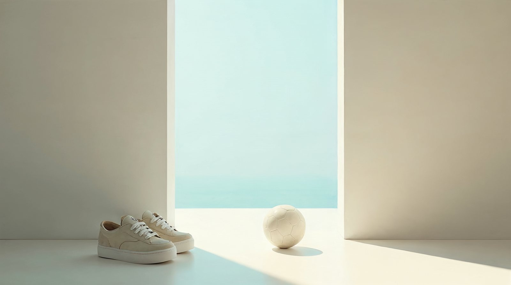
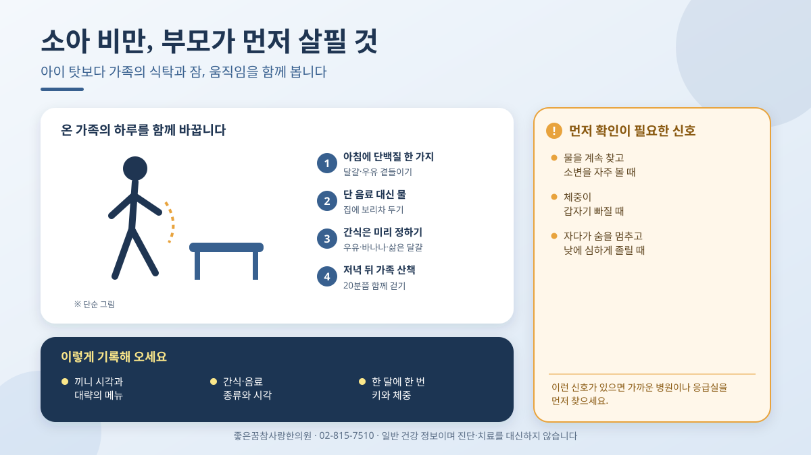

이종호 한의사 감수좋은꿈참사랑한의원 대표원장 (한의사 면허번호 19769)발행 2026-11-26 · 수정 2026-11-26
이 글의 차례
학교 건강검진 결과지가 가방 속에서 구겨진 채 나옵니다. 키와 몸무게 옆에 '비만'이라는 글자가 적혀 있고, 아래에는 소아청소년과 상담을 권한다는 문장이 있습니다. 아이는 대수롭지 않다는 듯 간식 봉지를 뜯는데, 부모님은 그 모습을 보며 뭐라고 말해야 할지 막막해집니다.
소아 비만은 아이의 키와 나이, 성별에 비해 체중이 많이 나가는 상태를 말합니다. 어른처럼 몸무게 숫자 하나로 보지 않고, 같은 나이와 성별 아이들 사이에서 키 대비 체중이 어느 위치에 있는지를 성장 곡선으로 봅니다. 그래서 숫자 자체보다 흐름이 더 중요합니다.
진료실에서 부모님들께 "살 빼라고 하면 애가 상처받을까 봐 말을 못 하겠어요"라는 말을 자주 듣습니다. 저도 그 마음을 압니다. 아이의 몸을 두고 하는 이야기는 조심스러워야 합니다. 이 글에서는 무엇을 먼저 확인하고, 집에서는 무엇을 해 볼 수 있는지, 한의원에서는 무엇을 함께 살피는지 적어 보겠습니다.
왜 아이의 체중이 늘어날까요
아이의 체중은 먹는 양과 쓰는 양의 균형으로 정해지지만, 그 균형을 흔드는 이유는 생각보다 다양합니다. 학원과 숙제로 앉아 있는 시간이 늘고, 바깥에서 뛰어노는 시간이 줄고, 휴대폰과 게임 시간이 길어지는 것이 요즘 아이들의 흔한 하루입니다.
식사 리듬도 큰 몫을 합니다. 아침을 거르고 점심을 급하게 먹은 뒤, 학원 가는 길에 편의점 간식을 먹고, 밤늦게 저녁을 몰아 먹는 흐름이 이어지면 몸은 쉽게 저장하는 쪽으로 기웁니다. 단 음료와 과자는 양에 비해 열량이 높아 금세 쌓입니다.
잠이 부족한 것도 체중과 관련이 있다고 알려져 있습니다. 늦게 자고 짧게 자는 아이는 다음 날 단 음식이 더 당기고 몸을 덜 움직이게 되기 쉽습니다. 마음이 힘들 때 먹는 것으로 달래는 습관이 생긴 아이도 있습니다.
드물지만 갑상선 기능이나 호르몬, 유전 질환, 복용 중인 약 때문에 체중이 늘어나는 경우도 있습니다. 키가 잘 자라지 않으면서 체중만 늘거나, 갑자기 빠르게 체중이 늘었다면 소아청소년과에서 이런 원인을 먼저 확인합니다.
한의학에서는 체중이 늘면서 몸이 무겁고 쉽게 지치는 모습, 소화가 더디고 몸이 붓는 모습, 열이 많아 식욕이 지나치게 왕성한 모습 등으로 나누어 살펴 왔습니다. 다만 이것은 검사를 대신하는 틀이 아니라, 아이의 몸 상태를 함께 이해하는 방법입니다.
통통한 아이와 소아 비만, 이렇게 나눠 봅니다
체중이 조금 많아 보인다고 다 비만은 아닙니다. 정확한 판단은 소아청소년과 진료를 따르시고, 여기서는 이해를 돕는 정도로만 나눠 보겠습니다.
성장 곡선으로 봅니다
아이의 키와 체중은 같은 나이, 같은 성별 아이들 100명 가운데 몇 번째쯤인지를 나타내는 백분위로 봅니다. 키 대비 체중 지수가 높은 쪽 백분위에 있으면 과체중이나 비만으로 분류하는 경우가 많습니다. 정확한 기준은 소아청소년과에서 설명을 들으시면 됩니다.
한 번의 숫자보다 흐름이 중요합니다. 키와 체중이 비슷한 속도로 함께 자라고 있다면 지켜보는 경우가 많고, 체중 곡선만 가파르게 올라가고 있다면 생활을 함께 살펴볼 때입니다.
사춘기 앞뒤의 변화
사춘기를 앞두고 키가 크기 전에 살이 먼저 붙는 아이도 있습니다. 이 시기의 변화는 자연스러운 경우도 많아서, 몇 달 단위로 키와 체중을 함께 재며 지켜보는 것이 좋습니다. 반대로 사춘기가 또래보다 이르게 시작되는 것 같다면 그것도 함께 확인합니다.
몸이 보내는 다른 신호
목 뒤나 겨드랑이 피부가 거뭇하고 두꺼워지거나, 코를 심하게 골거나, 무릎과 발목이 자주 아프거나, 쉽게 숨이 차다면 진료 때 꼭 알려 주세요. 혈당이나 간 수치, 잠의 문제를 함께 확인해 볼 단서가 될 수 있습니다.
아이의 마음도 함께 살핍니다
체중 이야기는 아이에게 생각보다 깊이 남습니다. 친구에게 놀림을 받거나, 가족에게 "그만 먹어"라는 말을 반복해서 들은 아이는 몰래 먹거나 먹는 것에 죄책감을 갖게 되기도 합니다. 이런 마음은 오히려 식습관을 더 흔들 수 있습니다.
그래서 저는 아이 앞에서 '살'이나 '뚱뚱하다'는 말 대신 '몸이 가벼워지는 습관', '튼튼해지는 하루' 같은 말을 쓰자고 부모님께 부탁드립니다. 목표도 몸무게가 아니라 '아침 먹기', '저녁 산책 20분' 같은 행동으로 잡는 편이 아이에게 훨씬 편안합니다.

바쁜 하루에 맞춰 보기
요즘 아이들의 하루는 어른 못지않게 빡빡합니다. 학교가 끝나면 학원 두세 곳을 돌고, 집에 오면 숙제가 기다립니다. 이런 하루에서 '운동을 더 하자', '저녁을 일찍 먹자'는 말은 현실과 동떨어지게 들리기도 합니다.
그래서 저는 지금의 일정을 그대로 두고 바꿀 수 있는 작은 틈부터 찾자고 말씀드립니다. 학원 사이 이동을 한 정거장 걸어서 가기, 학원 가방에 물병 넣어 다니기, 늦은 저녁은 양을 조금 줄이고 대신 학원 가기 전에 든든한 간식을 먹기 같은 것들입니다.
주말은 밀린 잠을 몰아 자는 날이 되기 쉬운데, 늦잠은 한 시간 안쪽으로만 허락하고 대신 오후에 바깥에서 한두 시간 몸을 움직이는 날로 만들어 보세요. 주말의 리듬이 무너지지 않으면 월요일 아침이 한결 가벼워집니다.
방학을 잘 쓰는 방법
방학은 생활 리듬이 크게 흔들리기 쉬운 시기이면서, 동시에 새 습관을 들이기 좋은 시기이기도 합니다. 일어나는 시각과 세 끼 시각만 정해 두어도 군것질이 꽤 줄어듭니다. 방학 동안 배워 보고 싶은 운동을 아이가 직접 고르게 하면 오래 이어 가는 경우가 많습니다.
스스로 점검해 보세요
아래 가운데 해당하는 줄이 있다면 표시해 두셨다가 진료 때 함께 보여 주세요. 점수를 매기려는 목록은 아닙니다.
- 아침을 거르는 날이 일주일에 사흘 이상이다
- 저녁을 밤 9시 넘어 먹는 날이 많다
- 단 음료나 탄산음료를 거의 매일 마신다
- 휴대폰, 게임, 텔레비전을 합쳐 하루 두 시간 넘게 본다
- 바깥에서 몸을 움직여 노는 시간이 하루 30분이 안 된다
- 밤 11시 넘어 잠드는 날이 많다
- 화가 나거나 속상할 때 먹는 것으로 마음을 달래는 것 같다
- 코를 골거나, 쉽게 숨이 차고 무릎이 아프다고 한다
먼저 이렇게 여쭙니다
부모님과 아이의 이야기를 들으며 저는 대략 이런 순서로 여쭙습니다. 처음부터 다 기억하지 못하셔도 괜찮습니다.
- 언제부터 체중이 늘었다고 느끼셨나요? 계기가 된 일이 있었나요?
- 학교 검진이나 소아청소년과에서 들은 이야기, 혈액 검사 결과가 있나요?
- 아기 때부터의 키와 체중 기록이 있나요? 키는 잘 자라고 있나요?
- 하루 식사는 몇 번, 몇 시에 하나요? 간식과 음료는 무엇을 먹나요?
- 잠은 몇 시에 들고 몇 시에 깨나요? 코를 골지는 않나요?
- 학원과 숙제, 휴대폰 시간을 빼면 몸을 움직이는 시간이 얼마나 되나요?
- 대변과 소화, 땀, 더위와 추위는 어떤가요?
- 먹고 있는 약이나 영양제가 있나요?
부모님 중에 체중이나 혈당, 혈압으로 관리 중인 분이 있는지도 여쭙습니다. 가족력은 아이를 탓하려는 것이 아니라, 앞으로 무엇을 조금 더 챙겨 볼지 정하는 데 쓰입니다.
가족의 식사 습관도 함께 여쭙습니다. 아이의 식탁은 가족의 식탁과 이어져 있어서, 아이만 바꾸려 하기보다 가족이 함께 조금씩 바꾸는 편이 오래갑니다.
일상에서 먼저 해 볼 수 있는 것
아이의 체중은 성장하는 몸이라 어른처럼 빼는 것보다, 키가 자라는 동안 체중이 더 빠르게 늘지 않도록 리듬을 잡는 쪽으로 보는 경우가 많습니다. 아래에서 하나만 골라 가족이 함께 시작해 보세요.
- 아침에 밥이나 빵에 달걀, 우유처럼 단백질을 한 가지 곁들여 먹기
- 집에 단 음료 대신 물과 보리차를 두기
- 저녁은 가능하면 가족이 함께, 텔레비전을 끄고 천천히 먹기
- 학원 가는 길 간식은 과자 대신 우유, 바나나, 삶은 달걀처럼 미리 정해 두기
- 저녁 식사 뒤 가족 산책 20분, 주말에는 자전거나 공놀이 한 번
- 잠자리 한 시간 전에는 휴대폰을 거실에 두기
굶기거나 한 가지 음식만 먹게 하는 식의 다이어트는 권하지 않습니다. 성장기 아이에게는 필요한 영양이 많고, 무리하게 줄이면 키 성장과 기운, 마음에도 부담이 될 수 있습니다.
간식을 완전히 금지하기보다 '정해진 시간에, 정해진 만큼'으로 바꾸는 편이 아이에게 편합니다. 금지가 많으면 숨어서 먹게 되기 쉽습니다.
먹는 속도도 살펴봐 주세요. 5분 만에 한 그릇을 비우는 아이는 배부르다는 신호가 오기 전에 이미 많이 먹게 됩니다. 한 숟가락 먹고 수저를 내려놓기, 꼭꼭 씹으며 오늘 있었던 일 이야기하기처럼 식탁에서의 대화가 속도를 늦추는 데 도움이 됩니다.
물 마시는 습관도 함께 들여 보세요. 목이 마를 때 음료 대신 물을 먼저 찾는 습관은 어릴 때 들여 두면 오래갑니다. 아이 전용 물병을 함께 고르는 것도 작은 재미가 됩니다.
한의원에서 함께 살필 수 있는 경우
- 소아청소년과에서 큰 질환은 확인되지 않았고, 생활 습관을 함께 잡아 가고 싶은 경우
- 입맛이 지나치게 왕성하고 열이 많으며 땀을 많이 흘리는 경우
- 소화가 더디고 쉽게 붓고 피곤해하며 몸을 움직이기 싫어하는 경우
- 잠이 늦고 얕아 다음 날 군것질이 늘어나는 흐름이 반복되는 경우
좋은꿈참사랑한의원에 처음 오시면 소아청소년과에서 받은 검사와 진단부터 확인합니다. 그다음 아이가 편안한 자세로 맥을 짚고, 식사와 간식, 잠, 소화, 대변, 땀, 활동량을 여쭙고, 필요하다고 판단되면 혀와 배도 살펴봅니다.
이렇게 모은 이야기를 바탕으로 생활 관리, 한약 상담, 침 가운데 지금 아이에게 맞는 방법을 함께 정합니다. 아이가 침을 무서워하면 억지로 하지 않습니다. 한약을 상의할 때는 아이의 나이와 체중, 먹고 있는 약을 모두 확인하며 신중하게 정합니다.
한의원 진료가 소아청소년과 진료를 대신하지는 않습니다. 정기적인 키·체중 측정과 필요한 검사는 소아청소년과에서 이어 가시고, 그 사이의 생활 리듬은 함께 살피겠습니다. 체중이나 키가 얼마나 달라질지는 약속드리지 않습니다.
이렇게 기록해 오시면 상담이 쉬워집니다
아이의 하루는 생각보다 빨리 흘러가서, 진료실에서는 잘 떠오르지 않습니다. 2주만 아래처럼 적어 보세요.
- 아침, 점심, 저녁을 먹은 시각과 대략의 메뉴
- 간식과 음료의 종류와 시각
- 잠든 시각, 깬 시각, 코골이 여부
- 몸을 움직인 시간과 종류(걷기, 체육, 놀이)
- 휴대폰과 게임 시간
- 한 달에 한 번, 같은 시간에 잰 키와 체중
몸무게는 매일 재기보다 한 달에 한 번이면 충분합니다. 숫자에 아이와 부모님 모두 지치지 않도록, 기록의 중심은 식사와 잠, 활동에 두세요.
아이가 스스로 적을 수 있는 나이라면 '오늘 마신 물 컵 수', '오늘 걸은 정류장 수'처럼 재미있게 셀 수 있는 것 하나를 맡겨 보세요. 스스로 해낸 것을 눈으로 보는 일이 아이에게는 꽤 큰 힘이 됩니다. 스티커 판을 함께 만들어 붙여 가는 가족도 있습니다.
가족이 함께하는 방법
아이의 체중 관리는 아이 혼자 하는 일이 아닙니다. 형제가 있다면 한 아이만 따로 다른 음식을 주기보다, 가족 모두가 같은 식탁을 조금씩 바꾸는 편이 아이의 마음도 덜 다칩니다. 할머니 할아버지 댁에서 지내는 시간이 많다면 그분들께도 간식 약속을 함께 나눠 주세요.
복용 중인 약이 있다면 처방한 의사와 상의 없이 줄이거나 끊지 않습니다. 한의원 진료를 함께 받을 때도 그 약은 그대로 두시고, 먹고 있는 약을 모두 알려 주세요. 다음에 오시면 그사이 아이가 무엇을 해냈는지부터 함께 칭찬하겠습니다.
이런 증상은 먼저 확인이 필요합니다
- 물을 계속 찾고 소변을 자주 보면서 오히려 체중이 갑자기 빠지는 경우
- 자다가 숨을 멈추는 듯한 모습이 반복되고 낮에 심하게 졸려 하는 경우
이런 신호가 있으면 한의원보다 가까운 병원이나 응급실을 먼저 찾으세요.
함께 읽으면 좋은 글
- 성장기 아이가 갑자기 많이 먹고 늘 배고프다고 할 때는 무엇을 살피나요?
- 학원이 늦게 끝나 밤 9시 넘어 저녁을 먹는 아이의 소화와 잠은 어떻게 살피나요?
- 아이가 휴대폰을 보다가 밤늦게 잠들 때는 어떻게 바꿔 갈 수 있을까요?
- 비만이라는 말을 들었을 때 체중보다 먼저 무엇을 살피나요?

여쭙는 것
- 언제부터 체중이 늘었다고 느끼셨나요? 계기가 된 일이 있었나요?
- 학교 검진이나 소아청소년과에서 들은 이야기, 혈액 검사 결과가 있나요?
- 아기 때부터의 키와 체중 기록이 있나요? 키는 잘 자라고 있나요?
생활에서 해 볼 것
- 아침에 밥이나 빵에 달걀, 우유처럼 단백질을 한 가지 곁들여 먹기
- 집에 단 음료 대신 물과 보리차를 두기
- 저녁은 가능하면 가족이 함께, 텔레비전을 끄고 천천히 먹기
한의원에서 함께 살필 것
- 소아청소년과에서 큰 질환은 확인되지 않았고, 생활 습관을 함께 잡아 가고 싶은 경우
- 입맛이 지나치게 왕성하고 열이 많으며 땀을 많이 흘리는 경우
- 소화가 더디고 쉽게 붓고 피곤해하며 몸을 움직이기 싫어하는 경우
먼저 확인이 필요한 신호
- 물을 계속 찾고 소변을 자주 보면서 오히려 체중이 갑자기 빠지는 경우
- 자다가 숨을 멈추는 듯한 모습이 반복되고 낮에 심하게 졸려 하는 경우
한눈에 보는 표
| 구분 | 핵심 |
|---|---|
| 여쭙는 것 | 언제부터 체중이 늘었다고 느끼셨나요? 계기가 된 일이 있었나요? 학교 검진이나 소아청소년과에서 들은 이야기, 혈액 검사 결과가 있나요? |
| 생활에서 해 볼 것 | 아침에 밥이나 빵에 달걀, 우유처럼 단백질을 한 가지 곁들여 먹기 집에 단 음료 대신 물과 보리차를 두기 |
| 한의원에서 함께 살필 것 | 소아청소년과에서 큰 질환은 확인되지 않았고, 생활 습관을 함께 잡아 가고 싶은 경우 입맛이 지나치게 왕성하고 열이 많으며 땀을 많이 흘리는 경우 |
| 먼저 확인이 필요한 신호 | 물을 계속 찾고 소변을 자주 보면서 오히려 체중이 갑자기 빠지는 경우 자다가 숨을 멈추는 듯한 모습이 반복되고 낮에 심하게 졸려 하는 경우 |
자주 묻는 질문
한약을 먹으면 아이 살이 빠지나요?
체중이 얼마나 달라질지는 약속드릴 수 없습니다. 한의원에서는 아이의 식욕, 소화, 잠, 활동량을 함께 살피며 생활 관리와 한약 상담, 침을 상의하고, 성장기 아이인 만큼 나이와 체중, 먹고 있는 약을 모두 확인하며 신중하게 정합니다.
어릴 때 찐 살은 키로 간다는데 그냥 두어도 될까요?
키가 자라며 체중 곡선이 자연스럽게 맞춰지는 아이도 있지만, 체중 곡선만 가파르게 올라간다면 생활을 함께 살펴볼 때입니다. 몇 달 단위로 키와 체중을 함께 재며 소아청소년과와 상의해 보세요.
아이에게 살 이야기를 어떻게 꺼내야 하나요?
몸무게나 외모보다 '아침 먹기', '산책하기'처럼 함께 할 행동으로 이야기하시길 권합니다. 아이를 탓하는 말보다 가족이 같이 바꾸자는 말이 아이 마음에 덜 상처가 됩니다.
운동은 얼마나 시키면 좋을까요?
아이가 즐거워하는 활동을 하루 조금씩이라도 이어 가는 것이 먼저입니다. 갑자기 강도를 높이기보다 가족 산책이나 놀이처럼 오래 이어 갈 수 있는 것부터 시작해 보세요.
좋은꿈참사랑한의원은 재진 때 지난번 이야기부터 이어서 여쭙니다. 진료시간과 예약은 오시는 길에서 확인하세요.
어디서 상담받을 수 있나요?
좋은꿈참사랑한의원은 서울 동작구 만양로2길 2 신성빌딩 3층·5층(서울 동작구 상도동, 7호선 상도역 3번 출구 근처)에 있습니다. 한의사 3명(이종호 대표원장, 조영기 수석진료원장, 정원영 진료원장)이 진료합니다. 진료시간은 평일 09:30~20:00(점심 13:00~14:00), 토·일·공휴일 09:30~15:00이며, 방문 전 전화로 확인을 권합니다. 예약은 네이버 예약, 카카오톡 상담, 전화 02-815-7510로 받습니다.
이 글은 일반적인 건강 정보이며 개인의 진단이나 치료를 대신하지 않습니다. 증상이 있거나 복용 중인 약이 있다면 진료를 통해 확인하세요. 치료 효과는 개인마다 다를 수 있습니다.
작성 기준: 일반적으로 알려져 있는 건강 정보를 참고해 정리했습니다(대표원장 감수). 증상 기록은 1~2주 동안 하루 1회, 비슷한 시간에 적어 오시면 지난 상태와 비교하기 쉽습니다.